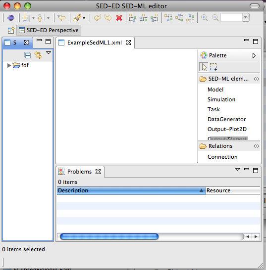
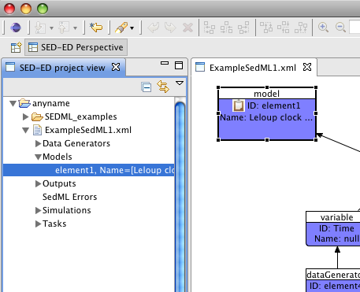

Alternatively, you can just drag-and-drop the folder into your project.
Welcome to this tutorial, which will explore the features of the SED-ED viewer and editor for SED-ML level 1 version 1.
SED-ED is available as a standalone application, a plugin for Eclipse, or as a plugin for SBSI.
This tutorial will cover:
The features listed above exist in all versions of SED-ED. If you run SED-ED as an SBSI plugin, then you will also be able to execute SED-ML files and run simulations as well. We’ll cover this at the end of the tutorial.
In this section, we’ll describe how to get SED-ED up and running on your machine. You only need to use one of these installation mechanisms.
This is the most straightforward installation:
You are now ready to start exploring the SED-ED editor. There are embedded Help files accessible via Window->Help. (Click on the ‘Contents’ link if the Help does not immediately appear ). You should see Help pages appear :
.
This installation will take a little longer, but once performed, you will also be able to run simulations encoded in SED-ML by accessing SBSI’s simulation capability.
Install the SED-ED by clicking on Help->Install New Software , and then in the ‘Work With’ drop-down list, choose the ‘SBSI Public’ plugin repository. Now, choose the SEDML tools project:
Follow the installation wizard and agree to all prompts for license agreements, and to restart the application.
If you need more help to install the plugin, there is a brief video illustrating how to install a plugin.
Finally, copy the folder ‘SEDML_examples’ that has appeared in your SBSI installation folder and paste it into the project you created. To perform the paste operation, select the project, right-click and then paste.
Alternatively, you can just drag-and-drop the folder into your project.
You may prefer this installation mechanism if you already use Eclipse and want to install SED-ED as a plugin, without installing a new application.
The instructions are largely similar to the section ‘Installing the SED-ED plugin for SBSIVisual’ described above. Before performing these steps though, you’ll need to tell Eclipse where the SBSI update site is located.
To do this, choose Help->Install New Software, and in the ensuing dialog, click ‘Add’ and add this URL: http://www.sbsi.ed.ac.uk/update/.
Now, proceed with installing the plugin, as described in ‘Installing the SED-ED plugin for SBSIVisual’ above.
Using any of the installation mechanisms described above, we should now be in a position to create new SED-ML files. In this tutorial we’ll reconstruct part of a SED-ML file used to describe simulations run on a Circadian clock model available from the BioModels database.
To do this, click File->New->Other and select the SED-ML Document option:

Give the file a name, and a project to which it will belong.

Once you click OK an empty editor will open:

( Note: It’s possible, depending on how your application is set up, that a simple text editor displaying some XML might open, rather than a graphical editor.
If this is the case, just select the file in the workspace, right-click and choose ‘Open With->SED-ML editor’ ).
There are five main elements of a SED-ML document, and we’ll create these one by one:
Click on the ‘Model’ tab of the palette menu in the editor, then click again somewhere on the editor canvas. A configuration dialog will pop up:
Initially, the ‘OK’ button is disabled, because some essential information is needed – where to locate the model. In the ‘Source’ text-box, type in the following URN:
urn:miriam:biomodels.db:BIOMD0000000021
and give the model a name (optional).
If you are networked, the ‘OK’ button will now be enabled, and so will the ‘Preview model’ button which gives a generic view of the model. Investigate this if you like, then click OK to dismiss the model configuration dialog. You’ll see a shape on the canvas displaying the model’s ID and name (if set):
While we’re editing the model, we’ll add a note for annotation. Click on the model shape to select it, then right-click and choose Add/View/Edit note from the context menu. Add a simple piece of well-formed HTML into the left-hand text-box. E.g.,
<p> Basic Biomodels21 model </p>
A browser preview will appear in the right-hand panel:
Now, click OK to dismiss the dialog. You’ll see an icon displayed on the model shape now, indicating that it is annotated.
You can add Notes to any SED-ML element, not just Model elements.
Now, we’ll configure a simulation. Click on the ‘Simulations’ tab of the palette, and click again on the editor canvas.
In this case, there are default settings which we can use- just edit the ‘Simulation End’ to be 100, then click OK. A simulation shape will be added to the canvas. By default a generic ODE solver algorithm is selected, this is fine for our purpose.
Now we’ll create a task which will link the model to the simulation. Click on the ‘Tasks’ tab of the palette, and click again on the editor canvas. This dialog is much simpler – optionally give the task a name.
You’ll notice that the task shape is highlighted in red, indicating there is a problem.
In SED-ML, tasks need to refer to a model and to a simulation. To resolve this, click on the ‘Connection’ tab in the palette and then connect the task to the model by first clicking on the task, then on the model. Repeat, this time connecting the task to the simulation:
Now is a good time to save the file, by File->Save.
Now, we’ll start configuring the output we want from the simulation. To keep things easy, we want to get a simple 2D plot of Time vs Per(unphosphorylated) protein.
First of all we’ll add two datagenerators from the palette. In the required ‘Math expression’ field, write ‘Time’ in one, and ‘P0’ in the other. E.g.,
and
This math expression will use the IDs of variables that reference the model via the task we created earlier.
First of all, we’ll create a variable for time.
To do this, select the ‘Time’ data generator, right-click and choose the ‘Add Variable’ option.
Variables can refer to either explicit variables in the model or implicit ‘symbols’.
In SED-ML there is only one implicit symbol, time. We’ll choose this now:
Now, create a variable that will refer to the model variable P0. As we did for time, select the DataGenerator for P0, right-click and choose the ‘Add Variable’ option.
(Note, there is currently a bug which means you have to click ‘Cancel’ at this point – the variable is still created on the diagram, though).
SED-ML uses XPath to identify components of the model – this is displayed in the bottom of the model viewer.
Finally, click OK and the red highlights should disappear.
Configuring the data generators is probably the trickiest part of authoring a SED-ML file. The Problems View accessible via Window->Other->General->Problems is useful to show any inconsistencies or validation errors in the document.
We’re almost done now – we just need to configure the presentation of the results.
For this example, add an ‘Output - Plot2d’ shape from the palette to the editor, adding an optional name if you like.
Now, select the Plot2D shape, right-click and choose ‘Add Curve’ from the menu. We’ll just be adding one curve in this example. The curve will appear in red on the diagram. By now you know this means there is still work to be done – in this case, we need to join the curve shape to the two data-generators that will produce the axes of the curve. Connect the curve to Time(X) then P0(Y) data generators, ending up with something like this:
We are now done! Check the Problems View at this stage if you’ve not already done so to ensure there are no errors.
If you’re running SED-ED from within SBSIVisual, you can now select the SED-ML file in the System View, right click and run the simulation via the ‘Execute SED-ML’ menu. You should see the fruits of your labours with a graph something like this:
SED-ED contains standard alignment tools and zoom control to help you refine the appearance of the workflow diagram. These are available from the application toolbar.
This example file is quite small so probably all the elements are visible in the editor view. However, as documents grow in size it’s useful to be able to locate an individual element easily. To do this, use the Project/System view to expand the SED-ML file – clicking on an element in this expanded view will select it in the editor:

Now, we’ll enhance our document to include a variant of the model that modifies two parameter values to alter the model’s behaviour. We can do this quite easily by copying the existing model element and adding two changes to it.
1. First of all, copy and paste the existing model.
2. Make a note of the original model’s ID.
3. Double click the model copy to open the configuration dialog, and set the
‘source’ to be the value of the ID of the original model. If you do this correctly the ‘Show Preview’ button should be active. Click OK.
4. Now select the new model and choose ‘Add Change’ from the context menu.
5. This dialog configures the change you want to apply to the model. In SED-ML you can change specific attributes, add, remove or swap XML elements. In this example we’ll change an attribute.
6. Click ‘Get XPath from model’.
7. Now, we need to identify an element, and the attribute to change for the parameter V_mT. Expand the tree view of the model so that you can see the attributes for that parameter, then, with the shift key held down, click firstly on the id attribute, then on value so that the XPath expression:
You should now see a new model element with two Change Shapes attached to it.
The changes we applied above have the effect of dampening oscillations in the model. If you’re running SBSIVisual then you can see this by reconnecting the task shape to the new model and executing the SED-ML file. ( To reconnect, click on the connection between the task and the original model to select it, then drag the connection target from the first model to the second).
To generate a new output showing the eimulation output of the new model, make a copy of the existing tasks, dataGenerators, and outputs, and connect the new model to the new copy of the task. You may need to edit the new Variable Ids and Math expressions – every ID must be globally unique in SED-ML.
At the end, you should end up with a diagram something like:
This tutorial has given you an overview of some of the features of SED-ML and the SED-ED editor. The embedded Help pages for SED-ED contain further information about filtering the view based on output, and autolayout – please refer to them for more detailed explanations of the functionality described here.
We’re certainly aware that SED-ED is not perfect yet – please get in touch with us if you have any bug reports or feature requests.
December 2011.